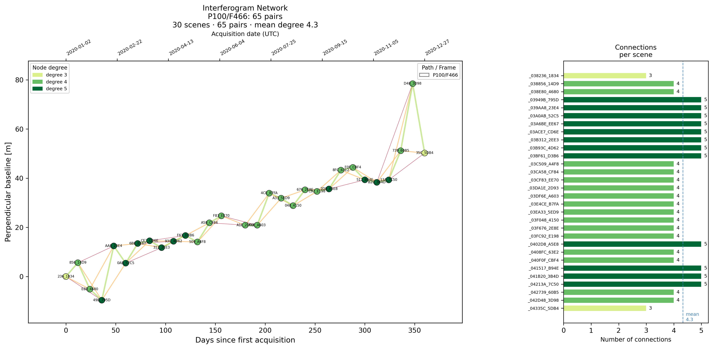

Utilities
Utilities are sets of tools designed to support and streamline InSAR processing workflows.
Select Pairs
Select interferogram pairs from ASF search results based on temporal and perpendicular baseline criteria.
from insarscript import Downloader
from insarscript.utils import select_pairs
s1 = Downloader.create('S1_SLC',
intersectsWith=[-113.05, 37.74, -112.68, 38.00],
start='2020-01-01',
end='2020-12-31',
relativeOrbit=100,
frame=466,
workdir='path/to/dir')
results = dl.search()
pairs, baselines = select_pairs(search_results=results)
Parameters:
| Name | Type | Description | Default |
|---|---|---|---|
search_results
|
list[ASFProduct] | dict[tuple[int, int], list[ASFProduct]]
|
Either a flat list (single stack) or a dictionary keyed by (path, frame). |
required |
dt_targets
|
list[float]
|
Preferred temporal spacings in days. A candidate pair passes if |dt - target| <= dt_tol for at least one target. |
(6, 12, 24, 36, 48, 72, 96)
|
dt_tol
|
float
|
Tolerance in days added to each entry in dt_targets. |
3
|
dt_max
|
float
|
Maximum temporal baseline in days. |
120
|
pb_max
|
float
|
Maximum perpendicular baseline in meters. |
150.0
|
min_degree
|
int
|
Minimum interferogram connections per scene. Enforced when force_connect is True. |
3
|
max_degree
|
int
|
Maximum interferogram connections per scene. |
999
|
force_connect
|
bool
|
If a scene falls below min_degree after primary selection, add its nearest-time neighbors that satisfy pb_max and dt_max. May introduce lower-quality pairs; a warning is logged. |
True
|
max_workers
|
int
|
Number of threads for API fallback. Has no effect if all products have local baseline data (common for Sentinel-1 and ALOS). Set to 1 to disable threading (useful for debugging). |
8
|
Source code in src/insarscript/utils/tool.py
472 473 474 475 476 477 478 479 480 481 482 483 484 485 486 487 488 489 490 491 492 493 494 495 496 497 498 499 500 501 502 503 504 505 506 507 508 509 510 511 512 513 514 515 516 517 518 519 520 521 522 523 524 525 526 527 528 529 530 531 532 533 534 535 536 537 538 539 540 541 542 543 544 545 546 547 548 549 550 551 552 553 554 555 556 557 558 559 560 561 562 563 564 565 566 567 568 569 570 571 572 573 574 575 576 577 578 579 580 581 582 583 584 585 586 587 588 589 590 591 592 593 594 595 596 597 598 599 600 601 602 603 604 605 | |
Plot Pair Network
Plot selected interferogram pairs SBAS network from select_pairs based on temporal and perpendicular baseline criteria.
from insarscript.utils import plot_pair_network
fig = plot_pair_network(pairs=pairs, baselines=baselines)
Example:

Parameters:
| Name | Type | Description | Default |
|---|---|---|---|
pairs
|
list[Pair] | PairGroup
|
A flat list of pairs or a dictionary keyed by (path, frame)
with lists of pairs. Each pair is a tuple |
required |
baselines
|
BaselineTable
|
Table or mapping containing temporal and perpendicular baseline information for each interferogram pair. |
required |
title
|
str
|
Main title of the network plot. Defaults to "Interferogram Network". |
'Interferogram Network'
|
figsize
|
tuple[int, int]
|
Figure size (width, height) in inches. Defaults to (18, 7). |
(18, 7)
|
save_path
|
str | Path | None
|
Path to save the generated figure. If None, figure is not saved. Defaults to None. |
None
|
Raises:
| Type | Description |
|---|---|
TypeError
|
If any scene name in |
ValueError
|
If a scene name cannot be parsed into a valid date. |
Source code in src/insarscript/utils/tool.py
625 626 627 628 629 630 631 632 633 634 635 636 637 638 639 640 641 642 643 644 645 646 647 648 649 650 651 652 653 654 655 656 657 658 659 660 661 662 663 664 665 666 667 668 669 670 671 672 673 674 675 676 677 678 679 680 681 682 683 684 685 686 687 688 689 690 691 692 693 694 695 696 697 698 699 700 701 702 703 704 705 706 707 708 709 710 711 712 713 714 715 716 717 718 719 720 721 722 723 724 725 726 727 728 729 730 731 732 733 734 735 736 737 738 739 740 741 742 743 744 745 746 747 748 749 750 751 752 753 754 755 756 757 758 759 760 761 762 763 764 765 766 767 768 769 770 771 772 773 774 775 776 777 778 779 780 781 782 783 784 785 786 787 788 789 790 791 792 793 794 795 796 797 798 799 800 801 802 803 804 805 806 807 808 809 810 811 812 813 814 815 816 817 818 819 820 821 822 823 824 825 826 827 828 829 830 831 832 833 834 835 836 837 838 839 840 841 842 843 844 845 846 847 848 849 850 851 852 853 854 855 856 857 858 859 860 861 862 863 864 865 866 867 868 869 870 871 872 873 874 875 876 877 878 879 880 881 882 883 884 885 886 887 888 889 890 891 892 893 894 895 896 897 898 899 900 901 902 903 904 905 906 907 908 909 910 911 912 913 914 915 916 917 918 919 920 921 922 923 924 925 926 927 928 929 930 931 932 933 | |
Earth Credit Pool
If user have multiple Earthdata credentials, user may storage it under ~/.credit_pool with format
then read use: You may then pass this into processor for seameless switch across multiple Earthdata credentialsfrom insarscript import Processor
processor= Processor.create('Hyp3_InSAR', earthdata_credentials_pool=ec_pool, ....)
Parameters:
| Name | Type | Description | Default |
|---|---|---|---|
earthdata_credentials_pool_path
|
Path
|
Path to the Earthdata credentials file. Defaults to
|
joinpath('.credit_pool')
|
Raises:
| Type | Description |
|---|---|
FileNotFoundError
|
If the specified credentials file does not exist. |
ValueError
|
If any line in the file does not contain a single ':' separating key and value. |
OSError
|
For any other I/O related errors while reading the file. |
Source code in src/insarscript/utils/tool.py
Slurm Job Config
This class encapsulates all parameters needed to generate a SLURM batch script, including resource allocation, job settings, environment configuration, and execution commands.
from insarscript.utils import Slurmjob_Config
config = SlurmJobConfig(
job_name="my_analysis",
time="02:00:00",
command="python analyze.py"
)
config.to_script("analysis.slurm")
Attributes:
| Name | Type | Description |
|---|---|---|
job_name |
str
|
Name of the SLURM job. |
output_file |
str
|
Path for standard output. Use %j for job ID. |
error_file |
str
|
Path for standard error. Use %j for job ID. |
time |
str
|
Maximum wall time in HH:MM:SS format. |
partition |
str
|
SLURM partition name to submit to. |
nodes |
int
|
Number of nodes to allocate. |
ntasks |
int
|
Number of tasks to run. |
cpus_per_task |
int
|
CPUs per task. |
mem |
str
|
Memory allocation per node (e.g., "4G", "500M"). |
nodelist |
Optional[str]
|
Specific nodes to use (e.g., "node[01-05]"). |
gpus |
Optional[str]
|
GPU allocation (e.g., "1", "2", "1g"). |
array |
Optional[str]
|
Array job specification (e.g., "0-9", "1-100%10"). |
dependency |
Optional[str]
|
Job dependency condition (e.g., "afterok:123456"). |
mail_user |
Optional[str]
|
Email address for job notifications. |
mail_type |
str
|
When to send email notifications (BEGIN, END, FAIL, ALL). |
account |
Optional[str]
|
Account to charge resources to. |
qos |
Optional[str]
|
Quality of Service specification. |
modules |
List[str]
|
List of environment modules to load. |
conda_env |
Optional[str]
|
Name of conda environment to activate. |
export_env |
Dict[str, str]
|
Dictionary of environment variables to export. |
command |
str
|
Bash command(s) to execute. |
Source code in src/insarscript/utils/tool.py
1092 1093 1094 1095 1096 1097 1098 1099 1100 1101 1102 1103 1104 1105 1106 1107 1108 1109 1110 1111 1112 1113 1114 1115 1116 1117 1118 1119 1120 1121 1122 1123 1124 1125 1126 1127 1128 1129 1130 1131 1132 1133 1134 1135 1136 1137 1138 1139 1140 1141 1142 1143 1144 1145 1146 1147 1148 1149 1150 1151 1152 1153 1154 1155 1156 1157 1158 1159 1160 1161 1162 1163 1164 1165 1166 1167 1168 1169 1170 1171 1172 1173 1174 1175 1176 1177 1178 1179 1180 1181 1182 1183 1184 1185 1186 1187 1188 1189 1190 1191 1192 1193 1194 1195 1196 1197 1198 1199 1200 1201 1202 1203 1204 1205 1206 1207 1208 1209 1210 1211 1212 1213 1214 1215 1216 1217 1218 1219 1220 1221 1222 1223 1224 1225 1226 1227 1228 1229 1230 1231 1232 1233 1234 1235 1236 1237 1238 1239 1240 1241 | |